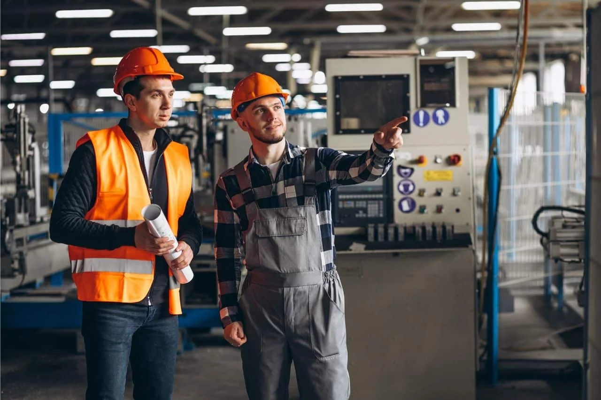

Oque é um Gestor Industrial?
Resumidamente, um gestor industrial é responsável por administrar uma Industria, um profissional de gestão industrial deve manejar o estoque, otimizar fluxo financeiros, gerir o armazenamento de produtos e, principalmente PPCP (Planejamento, Programação e Controle da Produção). Gestores industriais são importantíssimos para o funcionamento e eficiência das fábricas, assim como a segurança.
Visite as outras páginas para mais informações sobre a profissão